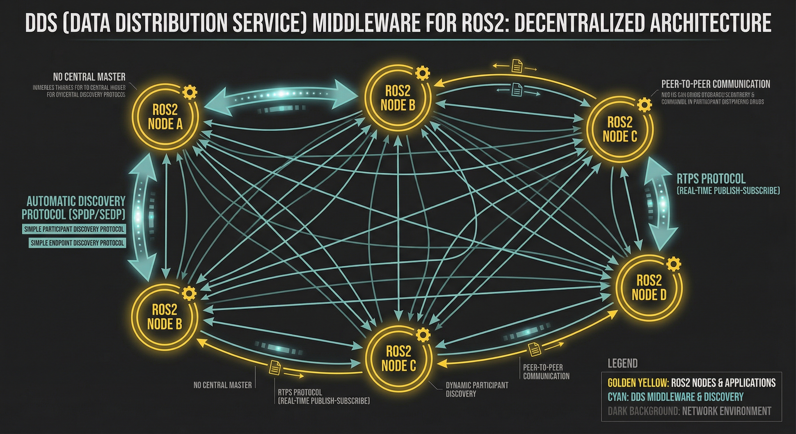

DDS (Data Distribution Service)
数据分发服务，ROS2的通信中间件。提供实时发布订阅传输，是ROS2相比ROS1的核心升级。
自动发现协议 (SPDP/SEDP)
节点启动时自动发现彼此，无需手动配置。SPDP发现参与者，SEDP发现端点。
RTPS实时传输协议
实时发布订阅传输协议。保障实时性、可靠性和服务质量(QoS)，支持多种传输模式。
去中心化 vs ROS1 Master
无中央主节点，分布式架构。多机通讯无需手动IP配置，节点自主发现直接通信。